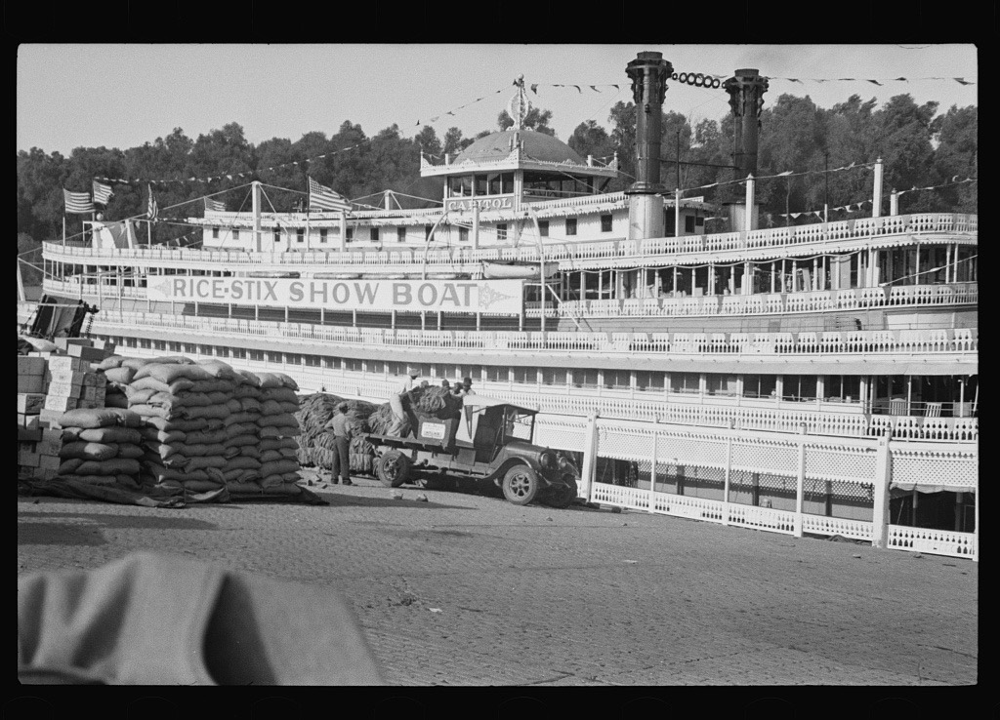
N°01 · The river · 1935Where the River Met the Rail
Pine Bluff, Greenville and Helena grew up where freight changed hands.
A new vision for life in the Delta.

The Delta has shaped how the world works, moves and makes culture. Delta Futurism starts with that inheritance and asks what we can create next: places to live, room to build, new ways to learn, and a culture that keeps moving forward.
where it starts,
The river, the road, the field, the home, the gathering and the work. Cotton went out by boat and boxcar, and much of the wealth it made was banked somewhere else. The same six places come back at the end of this story.

N°01 · The river · 1935Pine Bluff, Greenville and Helena grew up where freight changed hands.
 N°02 · The road · 1938
N°02 · The road · 1938Day laborers leave Pine Bluff for the fields. Many kept going north.
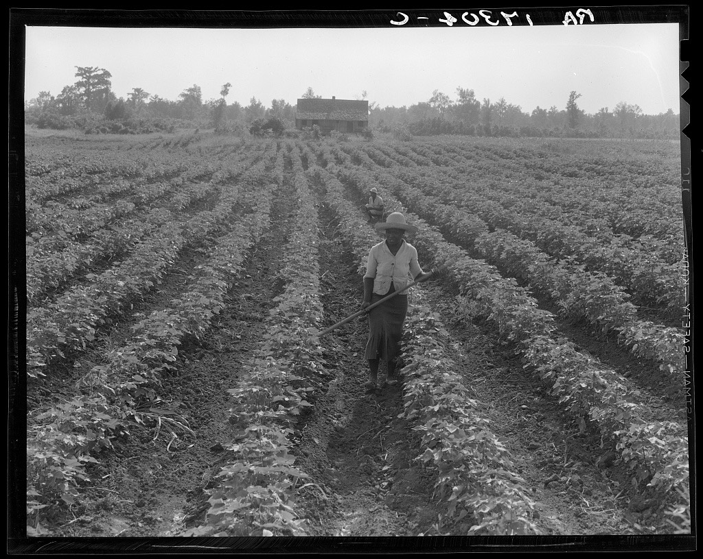
N°03 · The field · 1937The ground was worked here. The land was mostly owned elsewhere.
 N°04 · The home · 1939
N°04 · The home · 1939The Walkers of Belzoni bought their farm with a tenant-purchase loan.
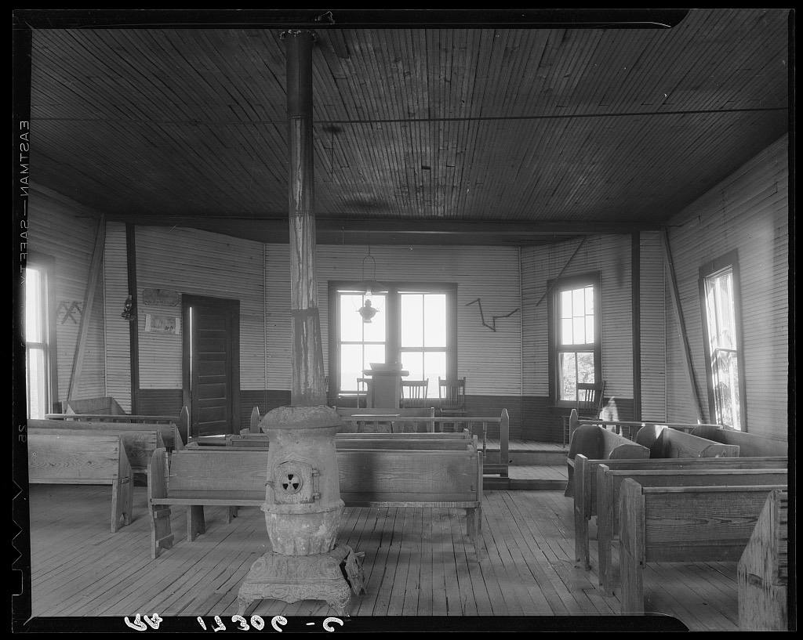
N°05 · The gathering · 1937For generations, the church was where the community met.
 N°06 · The work · 1937
N°06 · The work · 1937Cotton hoers worked thirteen hours a day for one dollar.
out of Pine Bluff,
Some of Pine Bluff’s own carried what they knew north and west, and built institutions people still use.
 Tulsa
TulsaGrew up in Pine Bluff. In Tulsa he bought land and sold it to Black families and businesses. That ground became Greenwood, later called Black Wall Street.
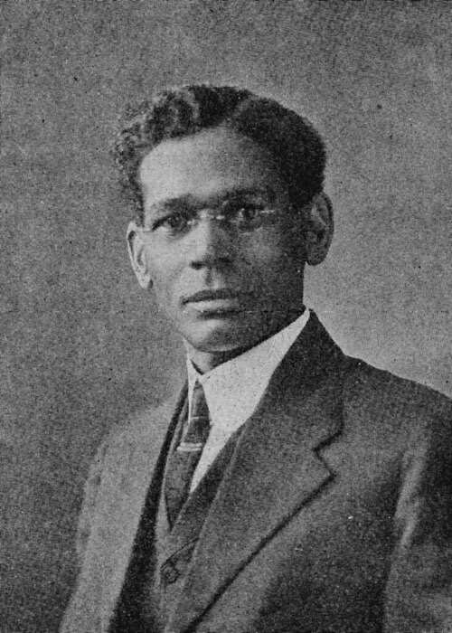
New York · 1910Born in Pine Bluff. Co-founded the National Urban League to help families arriving in Northern cities find work and a footing.
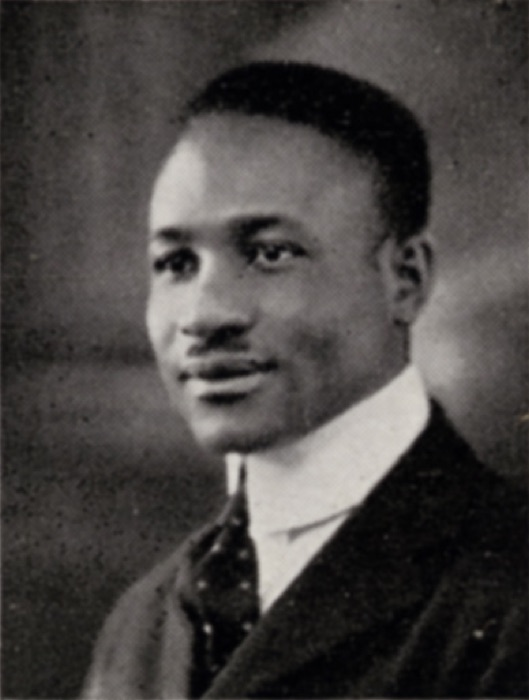
ChicagoBorn in Pine Bluff. In 1920s Chicago he brought Ma Rainey and other blues singers into the studio for Paramount, and Delta music reached Black listeners across the country.
and some stayed,
In 1939 the Walkers bought their farm with a federal tenant-purchase loan. In the same years, rural families the lines had not yet reached formed electric cooperatives and strung their own. In Pine Bluff, a college founded in 1873 to educate Black Arkansans was already sending out teachers. Today it is the University of Arkansas at Pine Bluff.
They strung their own lines.

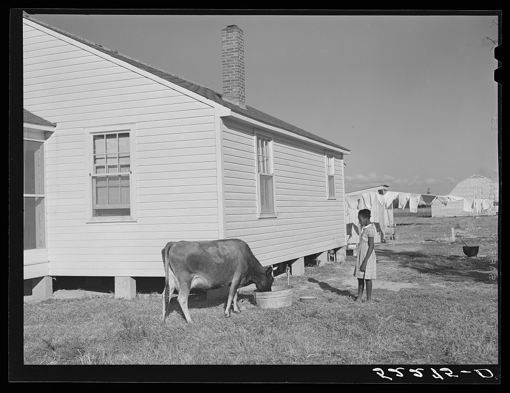
on Saturday night,
The blues left the Delta on the train and changed the world’s music. It is still being made here, and it is still changing.
 23A
23A 24A
24A 25A
25AThe Delta grew the cotton, laid the track and made the music. Much of what it made was owned and banked somewhere else.
then the work changed,
In 1944 a field near Clarksdale grew and picked a whole cotton crop without hand labor. By then people were already leaving: almost a million Black Mississippians went north between 1910 and 1960. The machines followed them, and the jobs that held towns together thinned out.
Pine Bluff’s railroad shops, once the county’s biggest industrial employer, are mostly gone. The city that had 57,389 people in 1970 counted 41,253 in 2020.
Encyclopedia of Arkansas; U.S. Census Bureau
The Delta kept working. Less and less of what it earned stayed.
right now,
The future starts with the people creating, teaching, building businesses and caring for their communities today. Four of these frames are imagined until we photograph the real people, with their permission.
 Neighbors
NeighborsVolunteers repaint a veteran’s house in eastern Pine Bluff.
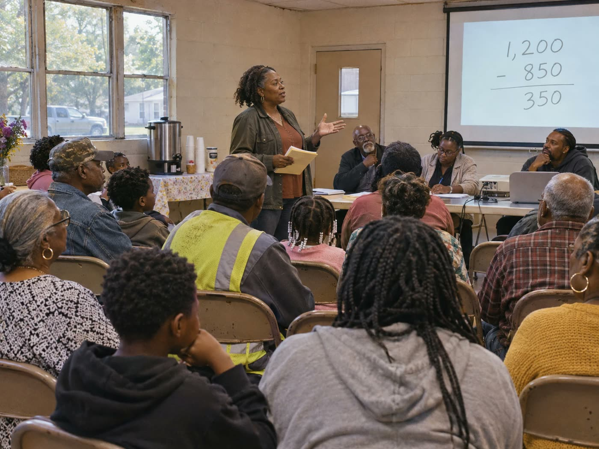
GatheringA fellowship hall full, and everyone gets a turn.
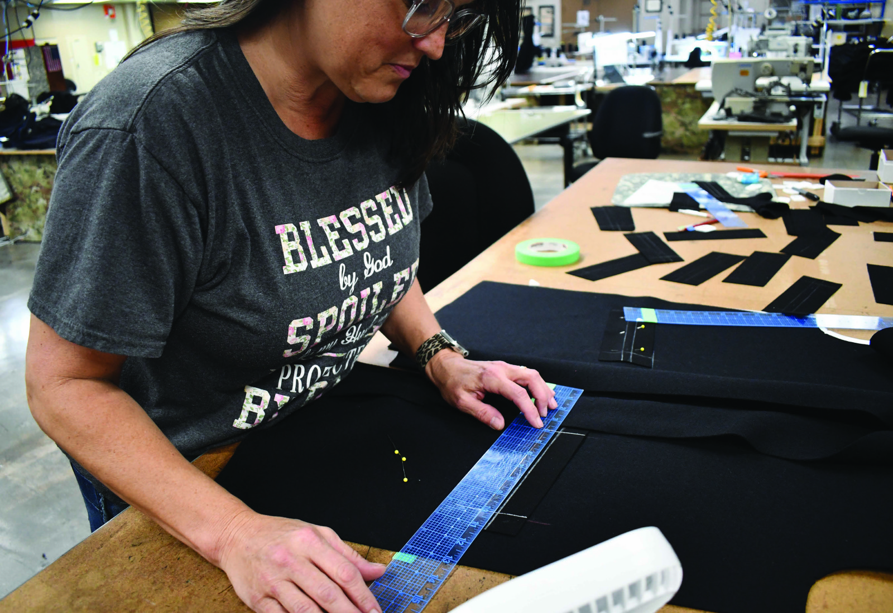
WorkA textile worker at the Pine Bluff Arsenal measures a cadet’s parka.
 Music
MusicNew songs from old ground, recorded at home.
 Learning
LearningAfter school, the map is of their own county.
 Business
BusinessFirst delivery of the day, doors propped open.
and now,
Data centers, steel, defense manufacturing and power plants are landing across the Delta at a scale the region hasn’t seen in generations. More than $15 billion is announced or under way on both sides of the river.
Company and government figures, as reported 2024–2026
| Where | What | Size and status |
|---|---|---|
| DataWest Memphis, AR | Google’s first Arkansas data center, on more than 1,000 acres | Part of $4 billion in Arkansas through 2027; “one of the largest investments ever” in the state |
| SteelOsceola, AR | U.S. Steel’s Big River 2 mill; Hybar’s rebar mill, and a second one | $3 billion, completed 2024; nearly $1 billion, opened Nov 2025; $1.1 billion raised in 2026 |
| DefensePine Bluff Arsenal, AR | Hanwha Defense USA’s propellant and munitions campus | About $2.2 billion and up to 400 jobs over seven years; planned |
| PowerJefferson County, AR | Arkansas Cypress, solar and battery; the Jefferson Power Station, gas | $1.6 billion, under construction; about $1.6 billion, due 2029 |
| PowerGreenville, MS | Entergy Mississippi’s Delta Blues Advanced Power Station | $1.2 billion, due 2028 |
| Still leavingArkansas City, AR | Clearwater Paper’s Cypress Bend mill | About 20% of jobs cut, April 2026 |
U.S. Census Bureau, Small Area Income and Poverty Estimates
The Delta Regional Authority calls its 252 counties, home to 10 million people, “the most economically distressed part of the United States.”
The money arriving now is real. So is the gap it lands in. Whether the new plants leave skills, businesses and ownership behind, or only a skyline, gets decided project by project, in the next few years.
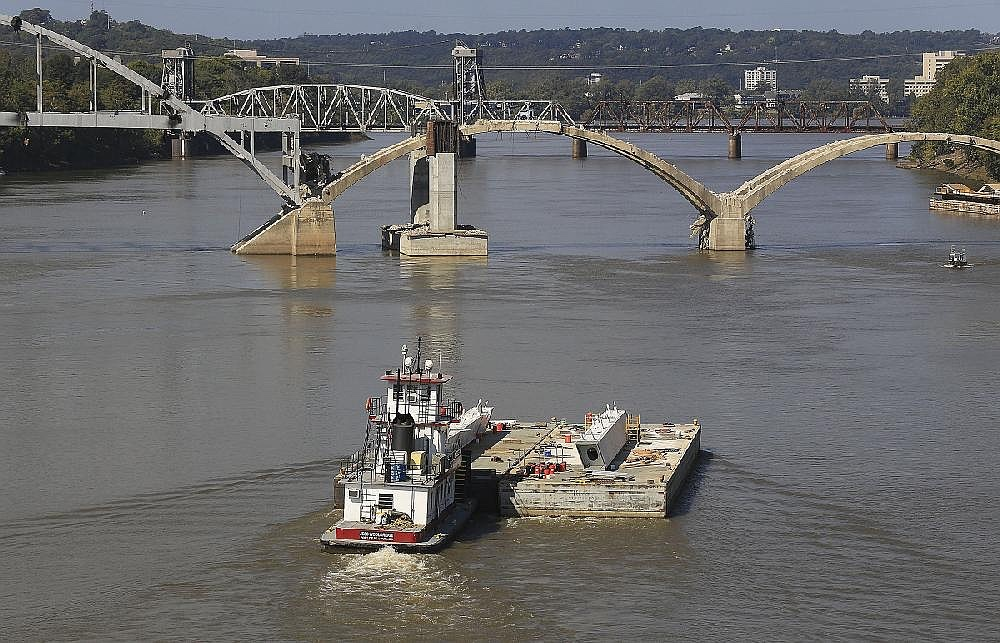
N°01 · The riverBarges on the Arkansas River, upstream of Pine Bluff.
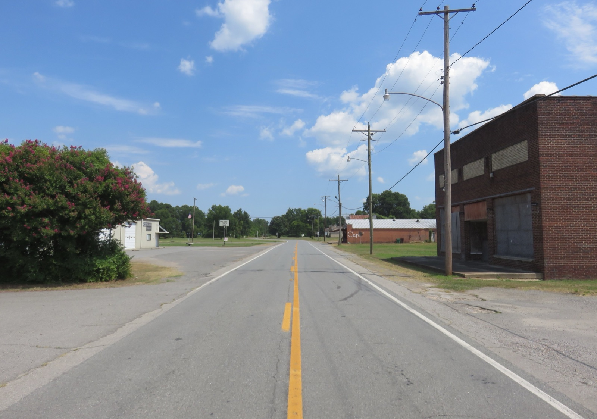
N°02 · The roadThrough Sherrill. The solar fields are going in just outside town.
 N°03 · The field
N°03 · The fieldSteel piles going in for a Delta solar farm.
One of them, up close. When energy is invested in a place, here is what flows, and what could stay.
near Sherrill, Jefferson County,
Families here held this ground through the hard decades. Some have now leased part of it for thirty years to Arkansas Cypress: 600 megawatts of solar and a 350-megawatt battery. For those years the land grows power instead of crops. The families still own it.
Every place that gets rebuilt goes through this. Money comes in and land changes hands. The choices made in the next few years will shape who shares in what gets built.
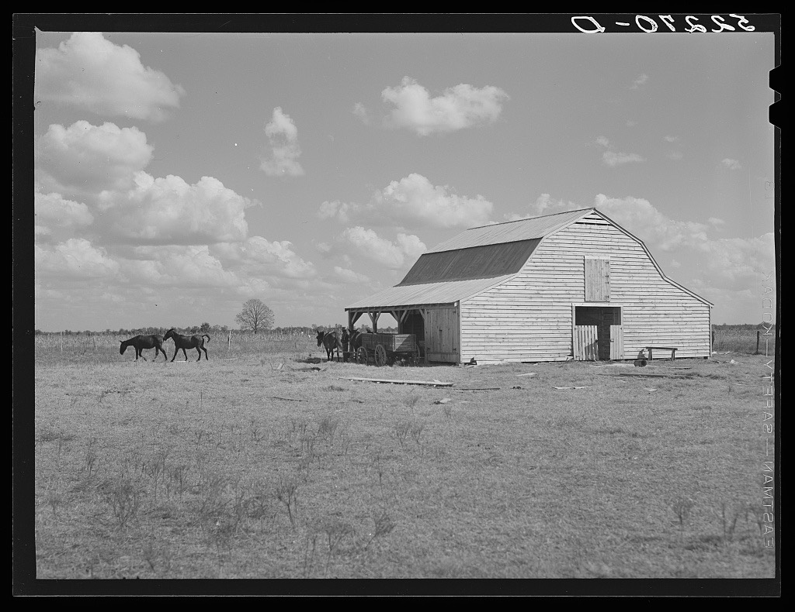
follow it,
Electricity and money take different roads.
No private line runs from the fields to one customer. The power joins the shared grid with everything else.
Contracts and regulators already decide much of how the money is shared. The open question is how much turns into skills, businesses and ownership that stay here.
while it’s built,
Building a solar field takes crews, equipment, meals, hauling and site services. Big projects often bring in traveling crews who leave when the job ends. The plant that stays needs people who live here and know how to keep it running.
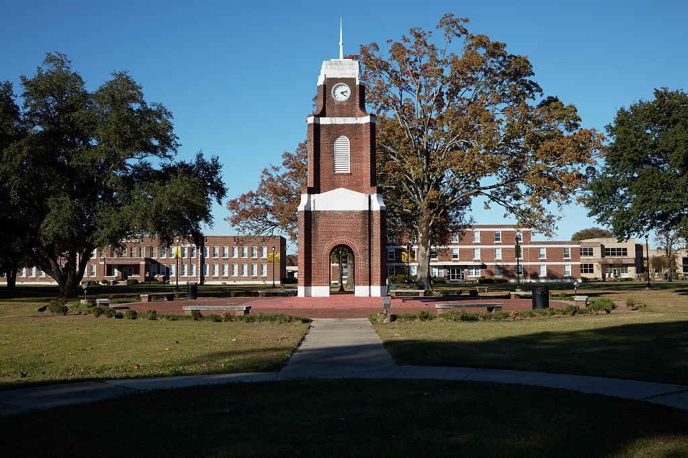
Entergy has asked Arkansas companies to bid on professional services, construction and materials supply for this project and the Jefferson Power Station, and expects about 1,600 jobs at peak across the two. The kinds of work above are our grouping of that call.
Contracts decide who gets paid. Capabilities decide who stays.
follow the power,
A large investment close by works like a river or a road: it makes other things possible. Follow it from the river to the kitchen table. None of this is part of the Arkansas Cypress project. These are things a county could build on top of it.

Cranes and carriers that plug in, on a river that already carries barges. Run by dockworkers who live here.

A highway stop that charges trucks and fixes them. The mechanics were trained here.
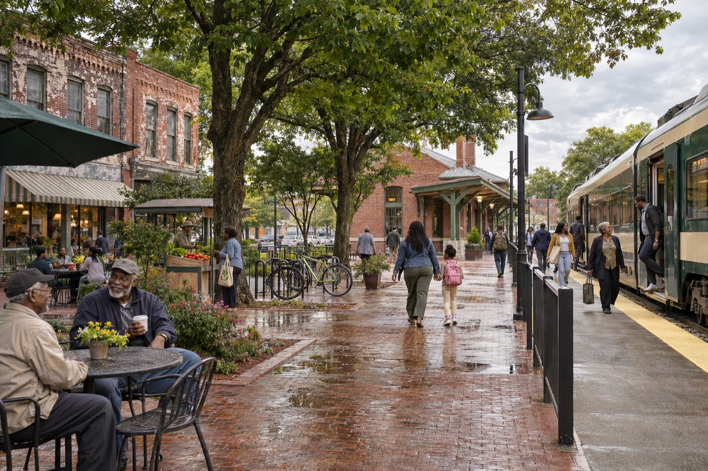
The old depots are still standing. Trains could stop again. A ride to work and school for anyone.
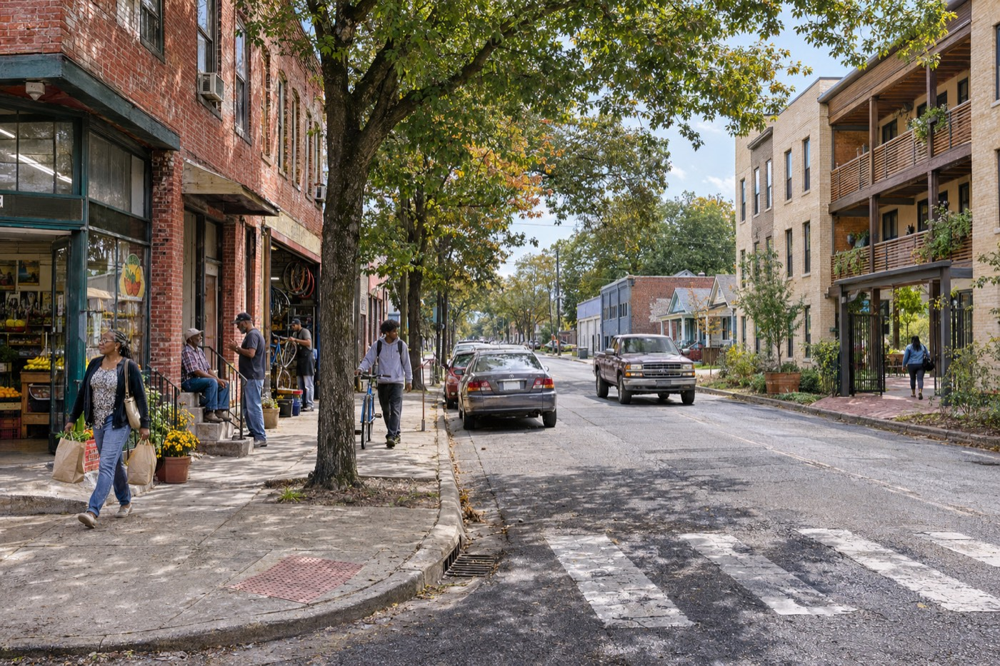
Steady work nearby and more customers keep small shops open. Owned by people who live on the block.

The river that carried cotton can carry Saturday markets. Stalls that belong to county growers.
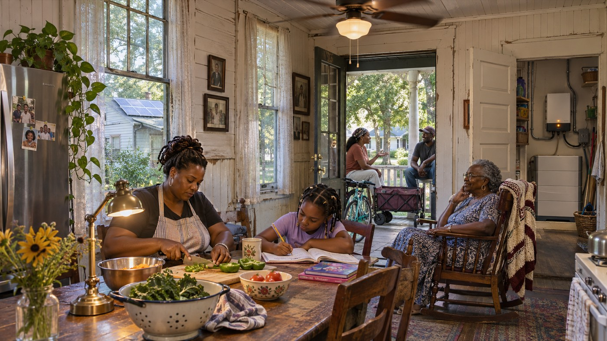
A battery that rides out a storm, a bill a family can plan around. The house and its power are the family’s.
All of it ends at a kitchen table.
if we build it,
These are ideas, not plans. Nobody has approved them, and none is promised. Each picture comes up in full color only at the line that says what stays with the people here.

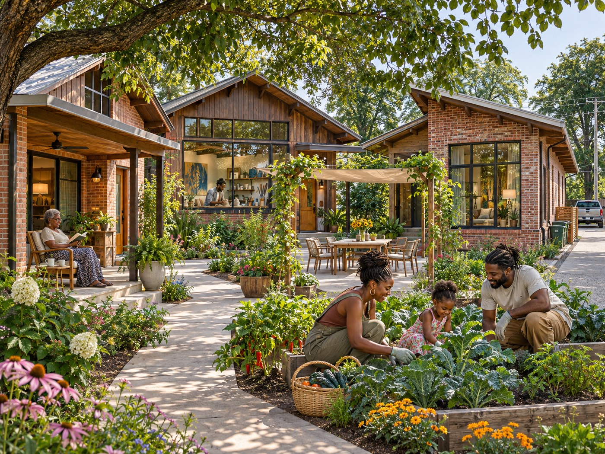
Restored main streets with apartments upstairs and shops and workspace below, shade on the sidewalk and somewhere to sit. Homes built for Delta heat and storms, with deep porches, daylight and room to work. Built on family land and run by people who live on the block.


New music, film, publishing and public art that start from Delta memory and go somewhere new, including sounds nobody has named yet. Home is where creators get their first interview, playlist, concert and billboard.
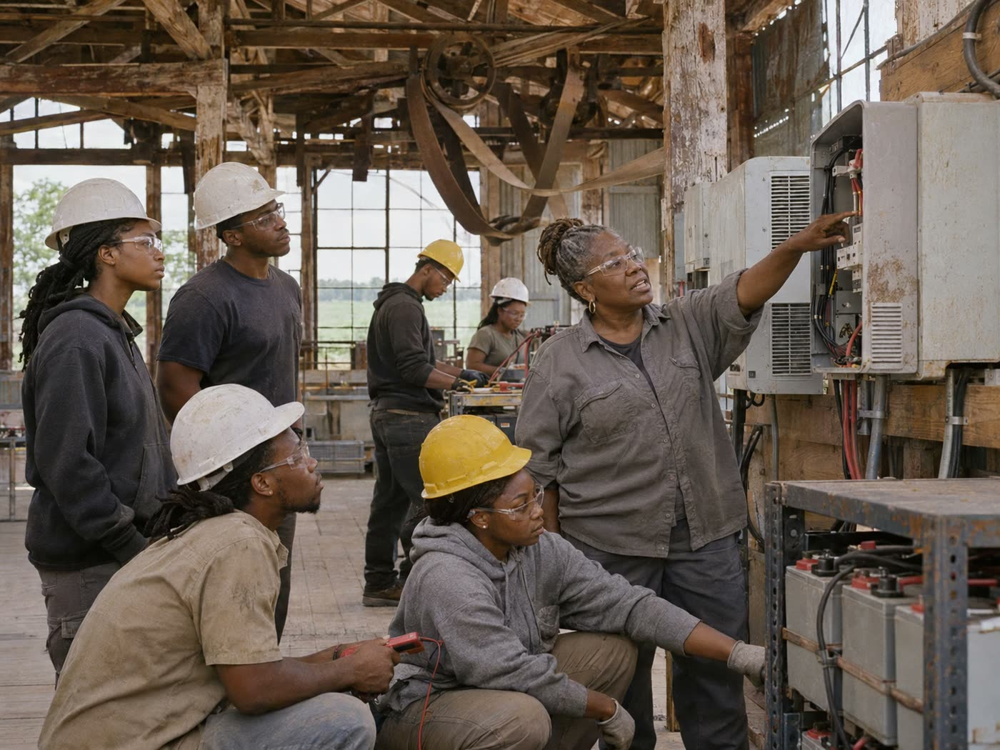

Apprentices learning to wire batteries inside a cotton gin the county already has. Elders and students drawing up plans together. Learning that counts relationships and practical skill, not only credentials. What people learn here, they can use and teach here.

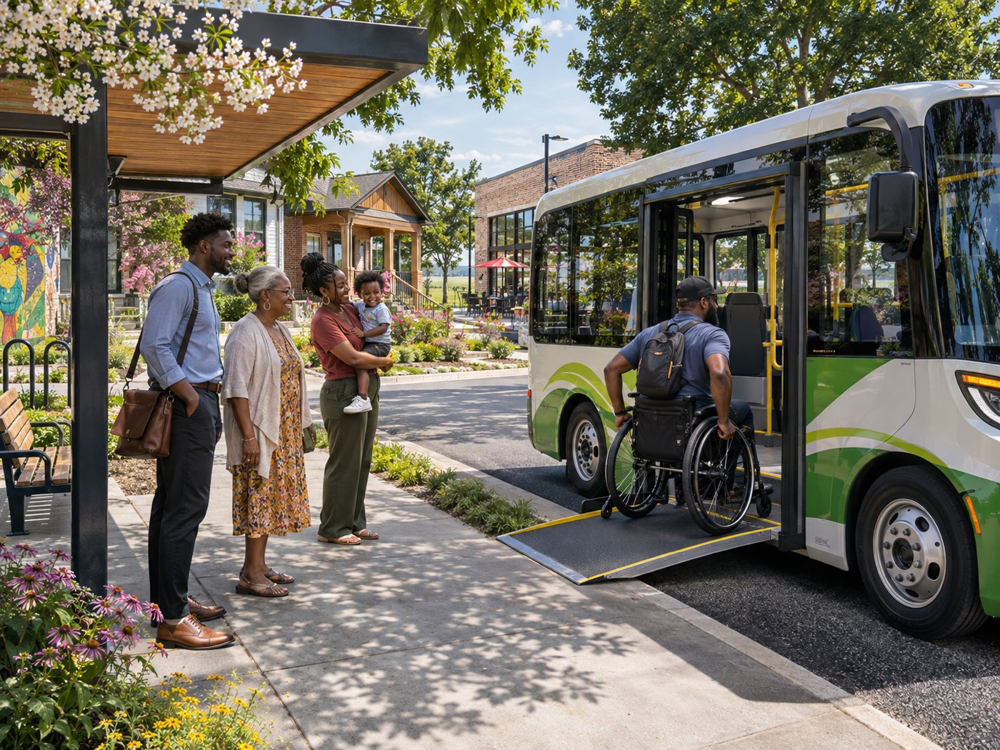
Institutions working together, shared knowledge, reliable internet, ways to reach work and school, and power that stays on in a storm. Run by members and neighbors who decide together how it works.
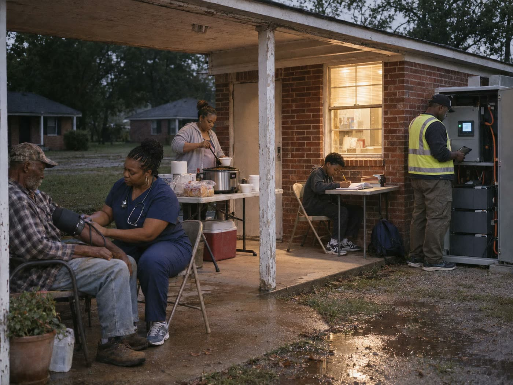
after the crews leave,
A solar field is an asset: something built. A capability is something a community can do, keep doing and pass on. When the lease ends, the land is still the families’, and the skills, businesses and backup power are still in the county.
Local kitchens feed the crews. The first apprentices are hired from the county.
Firms that served the build could hold contracts with the plants that stay. A clinic and a church could keep their lights on through a storm.
The first apprentices run crews and teach the next class. Families who kept their land farm it, lease it or build on it with better information than any buyer.
Panels wear out and come down or get replaced, and that work is local work.
from vision to practice,
We begin with a place’s people, history and existing efforts. Through research, storytelling, design and cultural planning, we help make a shared direction visible and connect it to work partners can carry forward.
A way of looking at the region’s future that starts with its people, places and creative inheritance.
Working with the artists, institutions, residents and civic partners already building the region, not in place of them.
Each with its own purpose, partners, place and status.
What the build can leave behind.
A proposed community partnership with Entergy Arkansas, construction partners, local businesses, training institutions and participating landowners: five workstreams that start with work the project already needs.
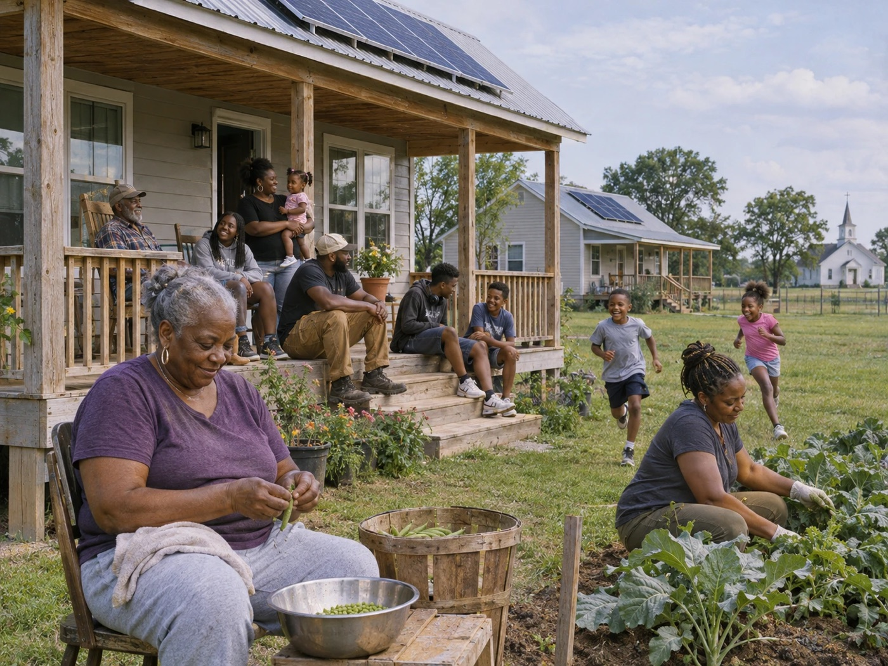
What could we build here next?
Delta Futurism begins with the belief that the region’s next chapter can grow from its own people, culture and imagination. The work is to make that future visible, bring others into it, and build the conditions for it to last.